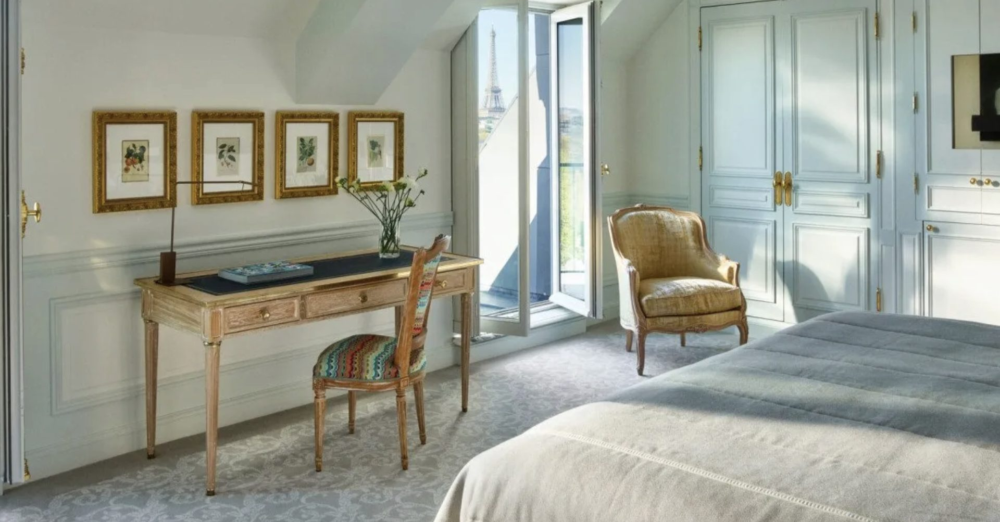

Dorchester Collection's grande dame facing the Tuileries — Alain Ducasse dining and rooms that look straight down the gardens.
Paris is the easiest great decision in travel — the harder question is which palace suits you. On my featured page, Le Meurice is the classic answer: Dorchester Collection's grande dame facing the Tuileries, with Alain Ducasse dining and rooms that look straight down the gardens. Forbes Five-Star, and classic Paris at its most elegant.
In my Paris proposal I put it this way: a true Paris institution facing the Tuileries Garden, pairing 18th-century grandeur with a discreet, polished service culture. The location is the 1st arrondissement at its absolute best — the Louvre, the gardens, and the rue de Rivoli arcades at your door.
The booking math matters here too: through my partner program, rooms come with a 4th night free and an upgrade guaranteed at booking. The Classic is the graceful base; the Executive is larger with a separate bath and shower — and can upgrade to a Superior with Eiffel Tower views.

Facing the Tuileries. Rooms that look straight down the gardens — the classic Paris view, from the palace built to hold it.
Alain Ducasse dining. The grande dame's table matches its address — a destination in its own right.
The partner-program math. 4th night free and a guaranteed upgrade at booking — on a four-night palace stay, that changes everything.
Classic is the brief. 18th-century grandeur, discreetly polished — if you want younger energy, that's Fouquet's on my list.
Choose Classic versus Executive deliberately. The Executive's size and separate bath — and its path to an Eiffel-view Superior — are worth the step up. My Paris proposal shows both.
Palace Paris books early. The garden-facing categories go first — hold dates before you plan the rest.
The grande dame facing the Tuileries — classic Paris at its most elegant, and with a 4th night free, smarter than it looks.
Rates through me are identical to booking direct — the perks are not. As a Fora advisor, my clients receive a space-available upgrade, daily breakfast, and a hotel credit — plus my direct line to the team on property before and during your stay.
Check Availability